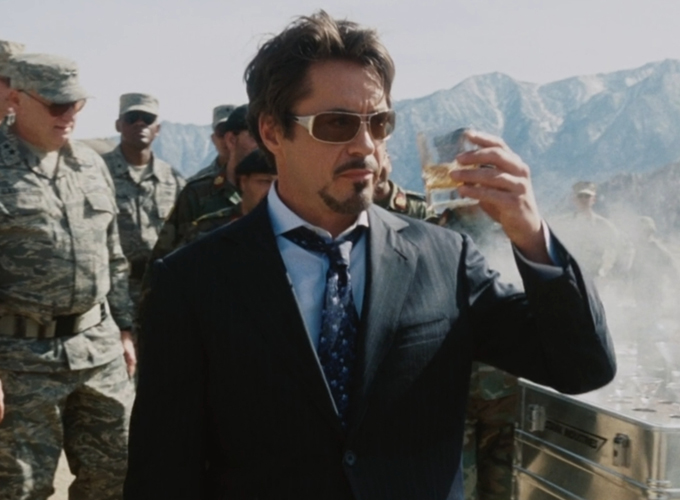

ABOUT
Tony Stark
- 
Anthony Edward "Tony" Stark was born on May 29, 1970, in Manhattan, New York to Howard Stark, a famous genius inventor and businessman, and Maria Stark, a socialite and philanthropist. Growing up under the eye of family butler Edwin Jarvis, his life was characterized by a cold and affectionless relationship with his father. Seeing that his son could achieve great things, Howard tried to inspire him with constant talks about his own role in the creation of Captain America. This instead embittered Stark, who felt that his father was taking more pride in his creations than in his family. A brilliant and unique child prodigy, Stark attended MIT for two years starting at age 14, and graduated summa cum laude at 17.
Kidnap
In 2010, Stark travels to war-torn Afghanistan with his friend and military liaison Lieutenant Colonel James Rhodes to demonstrate Stark's new "Jericho" missile. After the demonstration, the convoy is ambushed and Stark is critically wounded and imprisoned by a terrorist group, the Ten Rings. Fellow captive Ho Yinsen, a doctor, implants an electromagnet into Stark's chest to keep shrapnel shards from reaching his heart and killing him.
Iron Man
In 2012, when the Asgardian Loki arrives and begins menacing Earth, seizing the Tesseract from a S.H.I.E.L.D. facility, Fury activates the Avengers Initiative and Agent Phil Coulson visits Stark to have him review the research of Erik Selvig on the Tesseract. In Stuttgart, Steve Rogers and Loki fight briefly until Tony Stark appears in his Iron Man armor, resulting in Loki's surrender. After a confrontation with Stark and Rogers, Thor agrees to take Loki to S.H.I.E.L.D.'s flying aircraft carrier, the Helicarrier.
Hero
The Avengers successfully obtain all of the Infinity Stones before returning to the present. The Stones are incorporated into a gauntlet made by Stark, which Banner then uses to resurrect those that were disintegrated by Thanos. During the ensuing battle, Thanos obtains Stark's gauntlet and the two of them wrestle for control of it. Thanos is able to overpower Stark before attempting another snap but discovers that Stark has transferred the Infinity Stones to his own armor. Stark activates the Gauntlet and uses it to disintegrate Thanos and all of his forces and save the universe. He dies surrounded by Rhodes, Parker, and Potts.